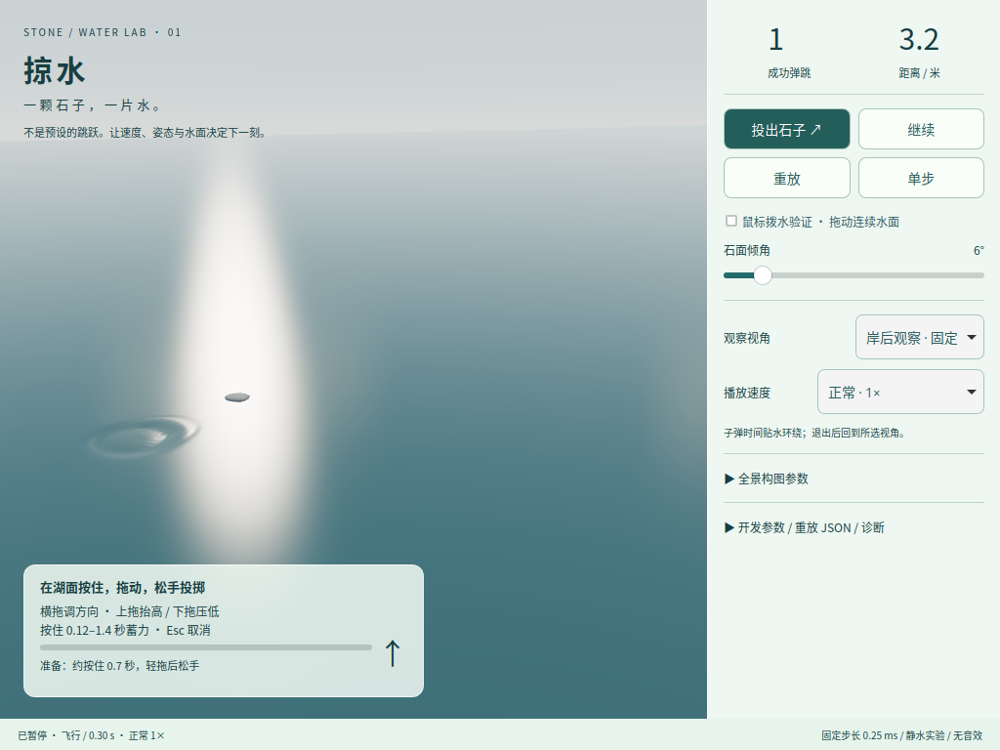
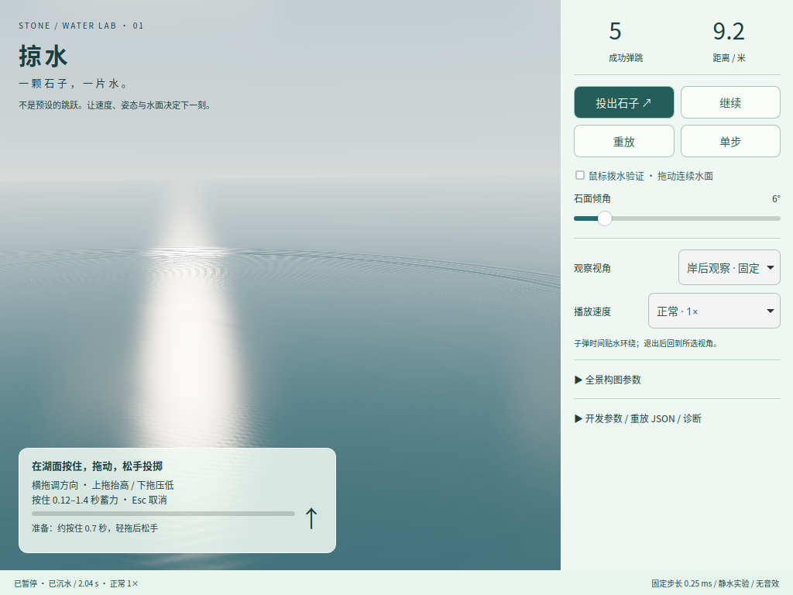

候选版，不是完整真实水花。同一16×8m水场从512×256细化到2048×1024（7.8125mm），不是移动小补丁，不抹掉旧尾迹。波速/每秒阻尼保持，新增按真实湿面积定义的米制反冲核与排水体积归一。独立实图复核确认波纹/尾迹更可读；压水体积和隆起水脊仍不够，翻卷/腾空水花没有实现。
回到游戏 · 固定快照 · 实际方法与局限 · 最终GPU验收 · 真实性能 · 85项测试记录 · 类型检查 · 构建
所有图片是实际浏览器截图。before/after共享快照、时间、相机位置/四元数/FOV和光照；机位几何以每图JSON为准。太阳竖直亮带是静态反射，不是水波。当前3秒短测约33FPS平均，RAF p95 63ms，不能宣称稳定60FPS；旧渲染器10项测试明确停用，其余75项通过。
此前将0.300s称作“接触帧”不准确：那时石头已经离水。下面两帧实测activeContact=0，第三帧已离水；不要求余波追着飞行石头走。
独立复核：石头后方椭圆弧形明暗边缘比before明确，不只是床纹更碎；不能用这一离水帧判当前石底压水是否成立。

这是诊断视图，不是默认材质。保留真实高度/坡度、反射和高光；可见局部波纹，但不证明腾空水花。

高度场仍是线性近似，仅竖直反冲，不支持液片翻卷、断裂和脱离；不将细波纹称为强烈入水水花。